STA5076Z Lecture 12 – Gradient boosting
Boosting
We begin by initiating the algorithm discussed in the lecture from scratch and applying it to a dummy data set.
Show/Hide Code
library(rpart)
set.seed(5076)
n <- 100
x1 <- round(runif(n, 0, 10), 0)
x2 <- round(runif(n, 0, 10), 0)
y <- round(10 + 3*x1 + x2 + rnorm(n, 0, 10))
dat <- data.frame(cbind(y, x1, x2))
# Initiate algorithm "by hand"
gb.manual <- function(lambda, d, ntrees){
train_mse <<- c() #To keep track of training error
resids <<- c() #To keep track of residuals
rhats <<- c() #To keep track of tree predictions
yhat_b <- mean(y) #First initialisation of prediction -> step 1
r_b <- y - yhat_b #First initialisation of residuals -> step 1
for(b in 1:ntrees){
ctrl <- rpart.control(maxdepth = d, cp = 0.001)
t <- rpart(r_b ~ x1 + x2,
control = ctrl) #Fit tree to residuals -> step 2a
rhat_b <- predict(t, newdata = dat) #Predicted values of tree b -> step 2b
yhat_b <- yhat_b + lambda*rhat_b #Updated prediction -> step 2b
r_b <- y - yhat_b #Updated residuals -> step 2c
# r_b <- r_b - lambda*rhat_b #Could also write it like this, same thing
# Save all the training mses, residuals, and tree predictions
train_mse <<- c(train_mse, mean((y - yhat_b)^2)) #Double arrow saves object outside function
resids <<- cbind(resids, r_b)
rhats <<- cbind(rhats, rhat_b)
}
return(mean(y) + lambda*apply(rhats, 1, sum)) #Output final predictions -> step 3
# Could also return y - resids[, ntrees]
# Or just yhat_b
}
#Run algorithm
yhat_manual <- gb.manual(lambda = 0.01, d = 1, ntrees = 1000)
#Final model training error
(gbm_manual_train_mse <- mean((y - yhat_manual)^2)) # Or just train_mse[ntrees][1] 102.1009In order to validate this procedure, let us compare the results with those obtained from using the gbm package.1
Show/Hide Code
library(gbm)
gbm_lib <- gbm(y ~ ., data = dat,
distribution = 'gaussian', #Applies squared error loss
n.trees = 1000,
interaction.depth = 1,
shrinkage = 0.01,
bag.fraction = 1) #Subsamples observations by default (0.5)
yhat_gbm <- gbm_lib$fit
(mse_gbm <- mean((y - yhat_gbm)^2))[1] 102.1009We see that the training MSEs match exactly. As a final sanity check, let’s compare each tree’s training error between the manual implementation and the package’s.
Show/Hide Code
all(round(gbm_lib$train.error, 9) == round(train_mse, 9))[1] TRUENote that some rounding issue creeps in after 9 decimal places (exacerbated by larger trees).
Example – California housing
Since this is our final analysis of this dataset, we will apply some feature engineering, a process of adapting/transforming/combining the existing information into new features to improve model performance.
Instead of using the total number of bedrooms, bathrooms, and people per neighbourhood, let’s use the number of households to convert these into per-house rates. We will also apply a 80/20 train-test split, here showing how a caret function can be used to do so.
Show/Hide Code
library(dplyr)
library(caret)
calif <- read.csv('data/calif.csv')
calif$HousePrice <- log(calif$HousePrice)
# Create calif feature engineered
calif_fe <- calif |> mutate(AveRooms = Rooms/Households,
AveBedrms = Bedrooms/Households,
AveOccup = Population/Households) |>
select(-Rooms, -Bedrooms, -Households)
## Using caret for train/test split:
set.seed(4026)
train_index <- createDataPartition(y = calif_fe$HousePrice, p = 0.8, list = FALSE)
calif_fe_train <- calif_fe[train_index,]
calif_fe_test <- calif_fe[-train_index,]As some benchmark for comparison – and to see whether the engineered features are useful – we will first fit a single regression tree.
Show/Hide Code
library(tree)
# Slightly larger tree
calif_fe_tree <- tree(HousePrice ~ ., data = calif_fe_train,
control = tree.control(nobs=nrow(calif),
mindev = 0.003))
# Tune
set.seed(1)
calif_fe_cv <- cv.tree(calif_fe_tree)
calif_fe_cv$k[1] <- 0
plot(calif_fe_cv$size, calif_fe_cv$dev, type = 'o',
pch = 16, col = 'navy', lwd = 2,
xlab = 'Number of terminal nodes', ylab = 'CV RSS')
axis(side = 1, at = 1:max(calif_fe_cv$size), labels = 1:max(calif_fe_cv$size))
alpha <- round(calif_fe_cv$k)
axis(3, at = calif_fe_cv$size, lab = alpha)
mtext(expression(alpha), 3, line = 2.5, cex = 1.5)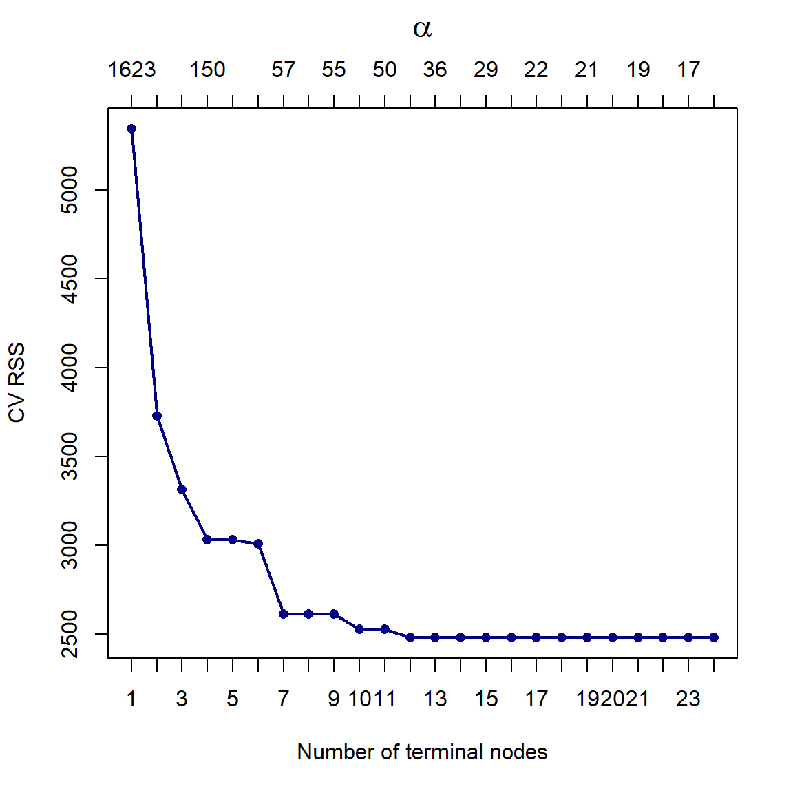
The CV RSS first reaches a minimum at 12 terminal nodes, hence we will prune it down to that size.
Show/Hide Code
calif_fe_pruned <- prune.tree(calif_fe_tree, best = 12)
plot(calif_fe_pruned)
text(calif_fe_pruned)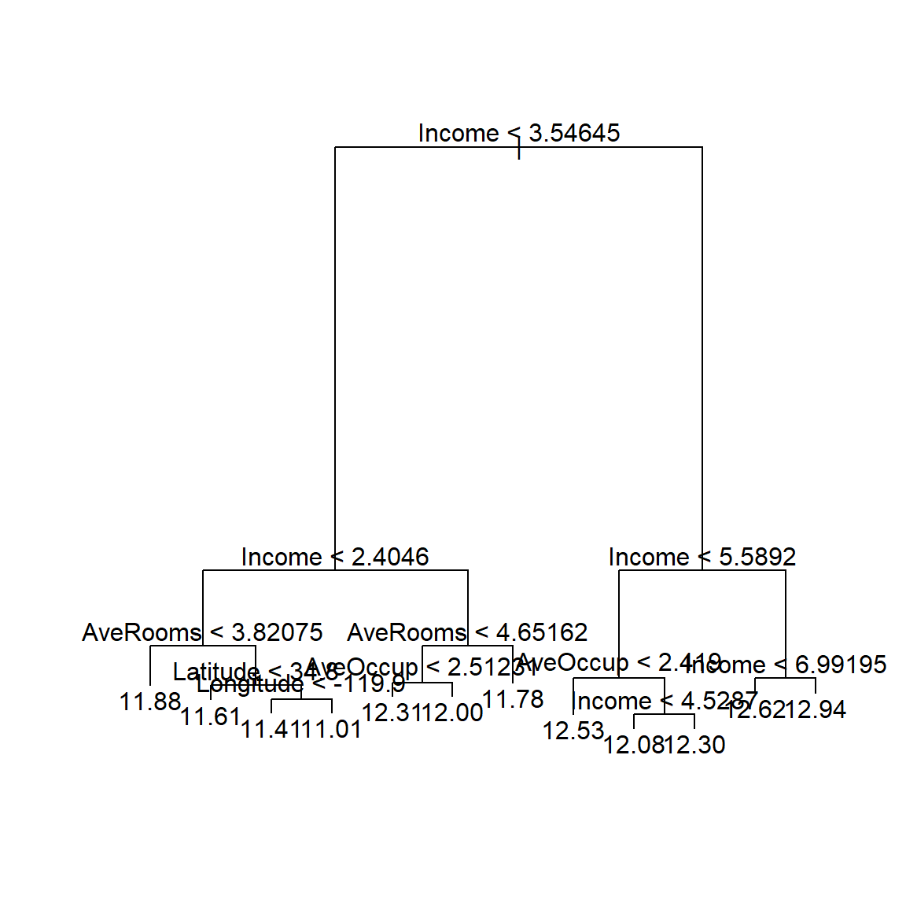
Here we see that the average number of rooms and average occupancy were indeed useful in this model (compare to our pruned tree from the regression trees lecture, which split almost exclusively on income and location). The CV RMSE is 0.387.
Next, we fit a gradient boosted trees model to the training set via the gbm package, using caret to apply hyperparameter tuning according to 10-fold CV (which can be parallelised). Note that for a problem of this size, the gbm model does take a while to run. Therefore, the code run below has been commented out after running, with the results saved and loaded back in for quick reproducibility.
Show/Hide Code
# set.seed(4026)
# ctrl <- trainControl(method = 'cv', number = 10, verboseIter = T)
#
# calif_gbm_grid <- expand.grid(n.trees = c(1000, 10000, 50000),
# interaction.depth = c(1, 2, 5),
# shrinkage = c(0.01, 0.001),
# n.minobsinnode = 10)
#
# calif_gbm_gridsearch <- train(HousePrice ~ ., data = calif_fe_train,
# method = 'gbm',
# distribution = 'gaussian',
# trControl = ctrl,
# verbose = T,
# tuneGrid = calif_gbm_grid)
# save(calif_gbm_gridsearch, file = 'data/gbm_calif_50k.Rdata')
load('data/gbm_calif_50k.Rdata')Although we only touch on the subject in this course, the hyperparameter tuning procedure can be an entire topic on its own. One alternative to the grid search applied above – whereby all combinations of fixed sets of hyperparameter values are used – is to apply a random search, which introduces some variation in the hyperparameters. Bergstra and Bengio (2012) initially provided a strong argument for this approach within a neural network context. Further exploration of these topics is left for the reader.
Looking at the CV results in Figure 3, we see that higher values of \(d\) in fact yielded better results. As expected, the higher learning rate reduced the CV error quicker for the same number of trees.
Show/Hide Code
plot(calif_gbm_gridsearch)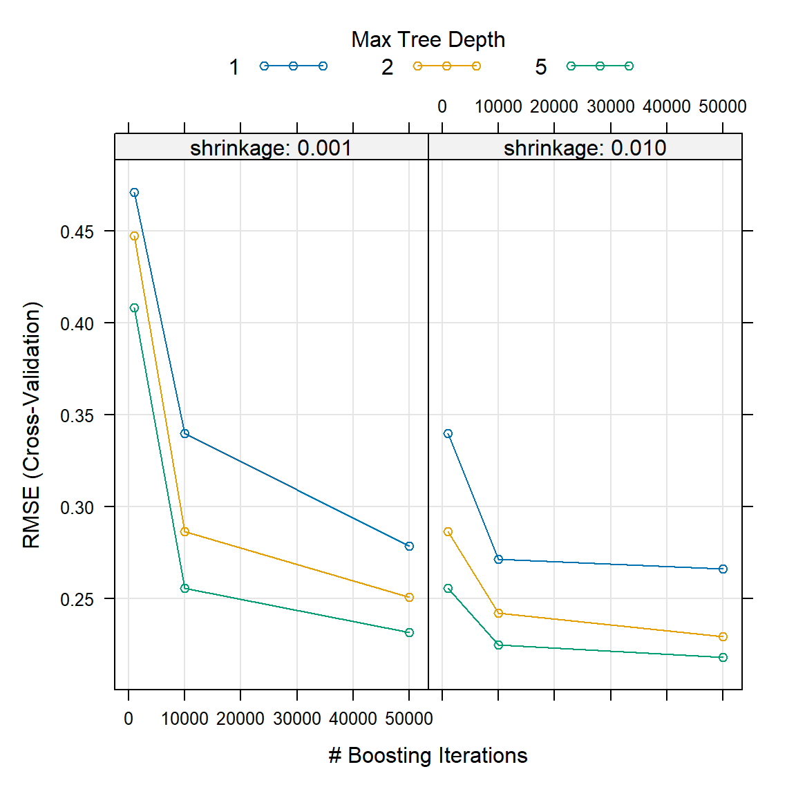
However, it is important to note that for this particular combination of number of trees it is difficult to determine whether the error is still decreasing at 50,000 trees. To ascertain this, we will use a large number of trees and see where the CV error reaches a minimum, as shown in Figure 4.
Show/Hide Code
options(scipen = 999)
# calif_fe_gbm <- gbm(HousePrice ~ ., data = calif_fe_train,
# distribution = 'gaussian',
# n.trees = 100000,
# interaction.depth = 5,
# shrinkage = 0.01,
# bag.fraction = 1,
# cv.folds = 10, #built-in CV
# n.cores = 10, #which can be parallelised
# verbose = T)
# save(calif_fe_gbm, file = 'data/gbm_calif_100k.Rdata')
load('data/gbm_calif_100k.Rdata')
d <- gbm.perf(calif_fe_gbm)
legend('topright', c('CV error', 'Training error'), col = c('green', 'black'), lty = 1)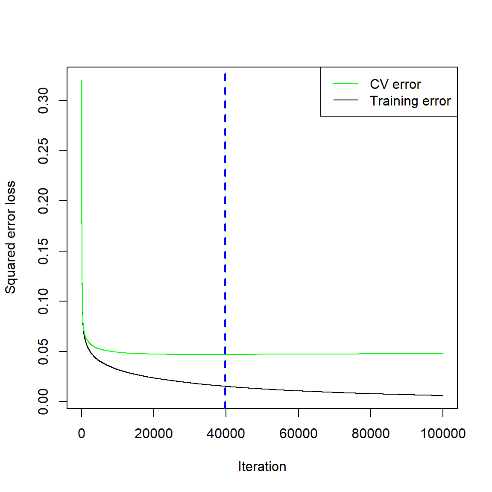
It turns out the CV error actually started increasing after 39731 trees. However, it is possible that one of the other hyperparameter combinations (different \(\lambda\) and \(d\)) would have yielded a lower CV if allowed to run for more than 50,000 trees. This example serves to illustrate that this style of hyperparameter tuning can be tedious, time-consuming, and a trial-and-error process. Whilst more sophisticated tuning techniques exist, for example Bayesian optimisation, each has their own compromises and drawbacks. These are beyond the scope of this course.
The variable importance plots (this time using vi_permute()) are shown in Figure @ref(fig:calif-gbm-vi):
Show/Hide Code
library(vip)
library(patchwork)
set.seed(1)
x_train <- select(calif_fe_train, -HousePrice)
y_train <- calif_fe_train$HousePrice
cgbm_pred_wrapper <- function(object, newdata) {
predict(object, newdata = newdata, n.trees = d) # d = chosen number of trees above
}
# cgbm_per_imp <- vi_permute(
# object = calif_fe_gbm,
# feature_names = colnames(x_train),
# train = x_train,
# target = y_train,
# metric = 'rmse',
# pred_wrapper = cgbm_pred_wrapper,
# nsim = 5
# )
# save(cgbm_per_imp, file = 'data/calif_fe_perm_varimp.RData')
load('data/calif_fe_perm_varimp.RData')
cgbm_per_p <- vip(cgbm_per_imp) +
labs(
title = 'Permutation Variable Importance',
x = 'Increase in Prediction Error',
y = NULL
) +
theme_minimal()
cgbm_imp_p <- vip(calif_fe_gbm) +
labs(
title = 'Impurity Variable Importance',
x = 'Decrease in Splitting Criterion',
y = NULL
) +
theme_minimal()
cgbm_per_p + cgbm_imp_p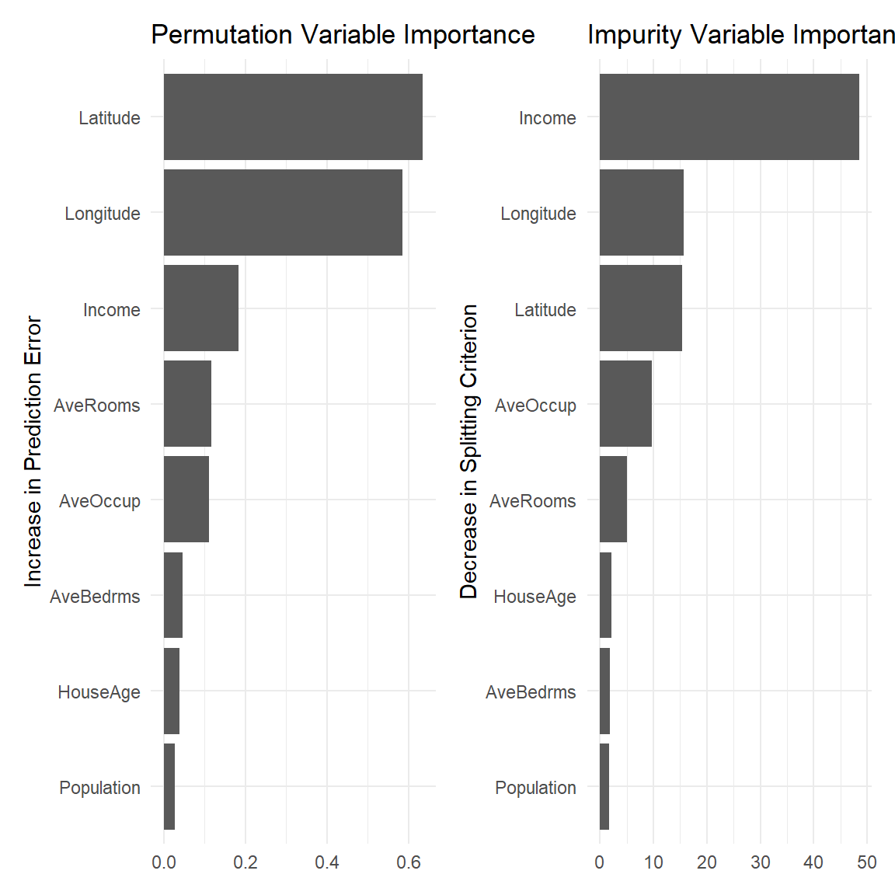
We see that according to impurity-based importance, Income appears dominant, implying that it is highly effective at reducing training RSS and is frequently used in early splits. Permutation-based importance, on the other hand, reflects the extent to which the model’s predictive performance depends uniquely on a variable. Since Income is strongly correlated with the spatial predictors Latitude and Longitude, permuting it does not degrade predictive accuracy as dramatically as its split-based contribution might suggest. This highlights that impurity importance measures how much a variable is used in constructing the model, whereas permutation importance measures how much the model relies on that variable for prediction.
It’s also worth noting that two of our engineered features – average occupancy and average rooms – were somewhat influential according to both measures.
Although variable importance plots tell us which features are most important for predicting the response, they do not tell us how the predictors influence the predictions. For this, we can make use of partial dependence plots.
Partial dependence plots
Visualisation of the relationship between the predictors and the predicted outcome is limited to low-dimensional views. Although these “slices” of information can seldom provide a comprehensive depiction of the approximation, it can still provide a useful indication of how certain features influenced the predictions on average, especially when their interaction with other variables is limited.
The gbm package again allows us to easily produce the partial dependence plots. Figure 5 shows 1-dimensional partial dependence plots for the previously fitted model on the (feature-engineered) California dataset for four of the (non-location) features.
Show/Hide Code
library(gridExtra)
library(grid)
ylims <- c(11.5,12.8)
p1 <- plot.gbm(calif_fe_gbm, 'Income', d, ylim = ylims, ylab = '')
p2 <- plot.gbm(calif_fe_gbm, 'AveRooms', d, ylim = ylims, ylab = '', xlab = 'Average Rooms')
p3 <- plot.gbm(calif_fe_gbm, 'AveOccup', d, ylim = ylims, ylab = '', xlab = 'Average Occupancy')
p4 <- plot.gbm(calif_fe_gbm, 'HouseAge', d, ylim = ylims, ylab = '', xlab = 'House Age')
grid.arrange(p1, p2, p3, p4, ncol = 2)
grid.text('Partial Predicted Log House Price', x = 0, vjust = 1, rot = 90)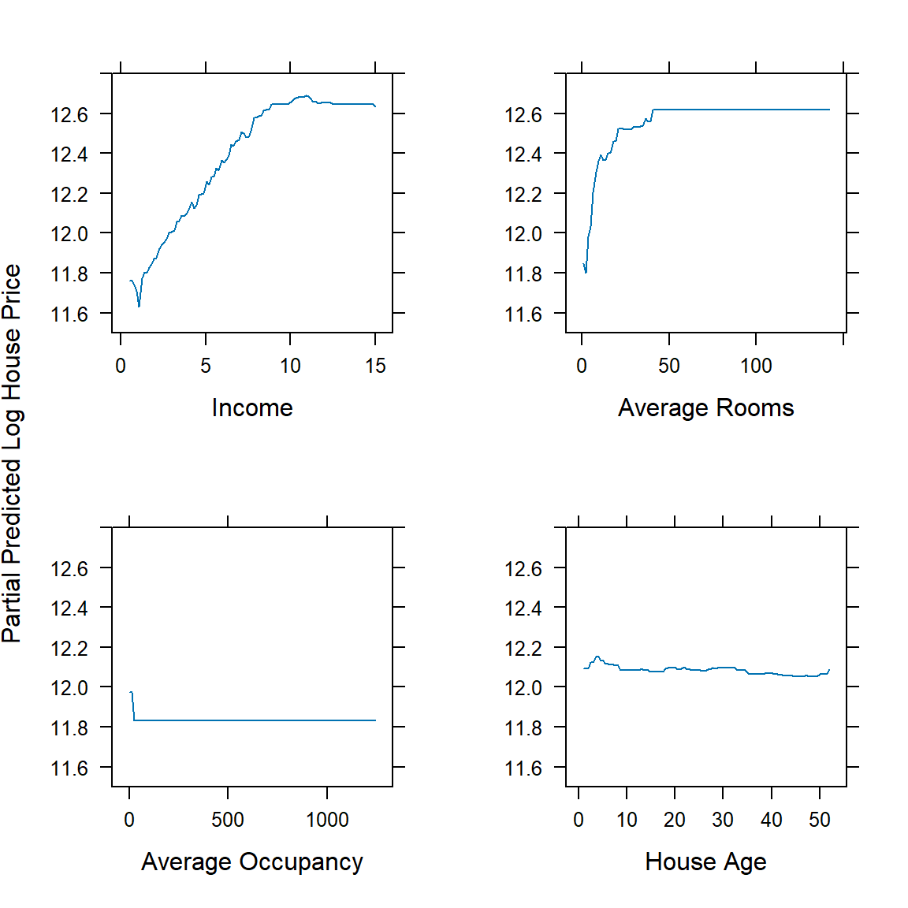
Looking at the average occupancy and average rooms, something is not right – an average occupancy of more than 1000 does not make sense, nor does more than 100 rooms on average! It is most likely an errant observation(s) with too few households.
Show/Hide Code
calif[which.max(calif_fe$AveOccup),] HousePrice Income HouseAge Rooms Bedrooms Population Households Latitude
19007 11.83138 10.2264 45 19 5 7460 6 38.32
Longitude
19007 -121.98Show/Hide Code
calif[which.max(calif_fe$AveRooms),] HousePrice Income HouseAge Rooms Bedrooms Population Households Latitude
1915 13.12237 1.875 33 1561 282 30 11 38.91
Longitude
1915 -120.1Indeed, six households for a population of 7460 is nonsensical. 1561 rooms for 11 households and a population of 30 is questionable, given some of the areas filled with mansions one finds in California. This goes to show how important an exploratory data analysis and cleaning are at the start of an analysis! These are just the observations yielding the maximum average occupancy and average rooms values, one could explore their distributions further.
It would be best to rerun the analysis with the cleaned data, which is left as a homework exercise. For now, we will just cut off these outliers, for which we can use a package offering more options for partial dependence plots. pdp is a popular package for this.
Show/Hide Code
library(pdp)
p1 <- partial(calif_fe_gbm, 'Income', n.trees = d)
p2 <- partial(calif_fe_gbm, 'AveRooms', n.trees = d, trim.outliers = T)
p3 <- partial(calif_fe_gbm, 'AveOccup', n.trees = d, trim.outliers = T)
p4 <- partial(calif_fe_gbm, 'HouseAge', n.trees = d)
grid.arrange(plotPartial(p1, ylab = '', ylim = ylims),
plotPartial(p2, ylab = '', ylim = ylims, xlab = 'Average Rooms'),
plotPartial(p3, ylab = '', ylim = ylims, xlab = 'Average Occupancy'),
plotPartial(p4, ylab = '', ylim = ylims, xlab = 'House Age'),
ncol = 2)
grid.text('Partial Predicted Log House Price', x = 0, vjust = 1, rot = 90)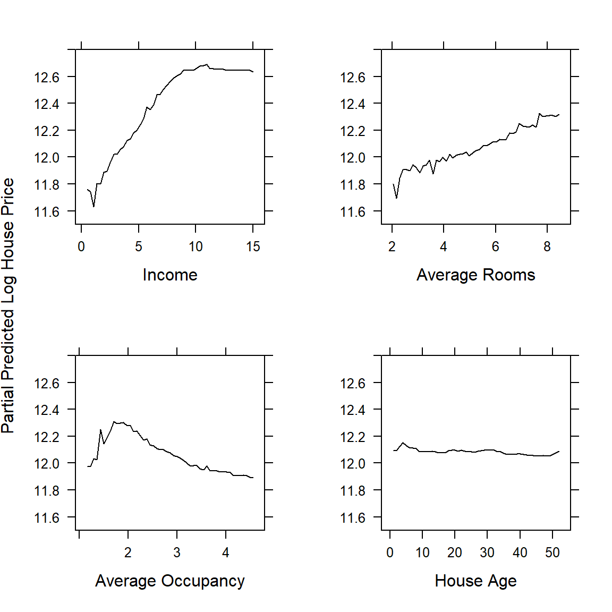
The lack of discernible relationship between house age and predicted house price reflects its low variable importance, noting that the y-axes have been adjusted such that the features are directly comparable. For income and average rooms we observe a general positive relationship, whilst increasing average occupancy initially increases the predicted house price (although increasing the resolution could add a lot of noise between one and two occupants), before it gradually decreases.
Finally, we can also look at the partial dependence of two features simultaneously. To come full-circle with this example, we will do so for the latitude and longitude. In order to add the map border, we will extract the partial dependence information.
Show/Hide Code
library(maps)
library(RColorBrewer)
latlong_pd <- plot.gbm(calif_fe_gbm, c('Longitude', 'Latitude'), return.grid = T)
# Same colour scale as before
n_breaks <- 9
my_cols <- brewer.pal(n_breaks, 'YlOrBr')[cut(latlong_pd$y, breaks = n_breaks)]
# Plot the partial dependence values
plot(latlong_pd$Longitude, latlong_pd$Latitude, pch = 15,
xlab = 'Longitude', ylab = 'Latitude', col = my_cols)
legend(x = 'topright', bty = 'n', title = 'Log Median House Price', cex = 0.9,
legend = round(seq(min(latlong_pd$y), max(latlong_pd$y), length.out = n_breaks), 2),
fill = brewer.pal(n_breaks, 'YlOrBr'))
# Add the state border
map('state', 'california', add = T, lwd = 2)
text(-123, 35, 'Pacific Ocean')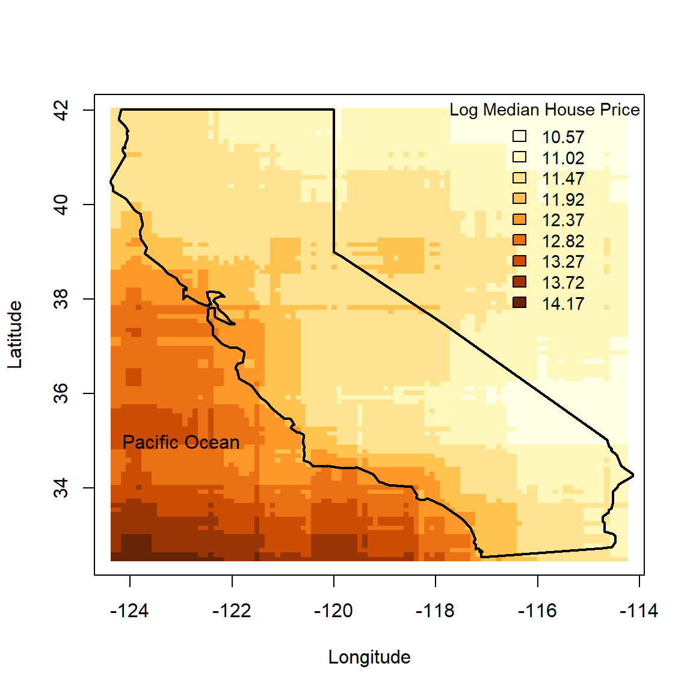
In Figure 7 we see that the model extrapolates beyond the state boundaries, extending the general trend observed earlier of “the more south-west, the more expensive”. This completely messes up the colour scale, so to get a more realistic and useful picture let us rather only plot the partial dependence information pertaining to populated locations.
Show/Hide Code
library(latticeExtra)
locs <- distinct(calif, Longitude, Latitude)
p <- partial(calif_fe_gbm, c('Longitude', 'Latitude'), locs, n.trees = d)
# Same colour scale as before
n_breaks <- 9
my_cols <- colorRampPalette(brewer.pal(n_breaks, 'YlOrBr'))
pp <- plotPartial(p, col.regions = my_cols(100))
# Add the state border. plotPartial creates a lattice be default
my_map <- map_data('state', 'california')
border_layer <- latticeExtra::layer(panel.polygon(my_map, col = 'transparent'))
pp + border_layer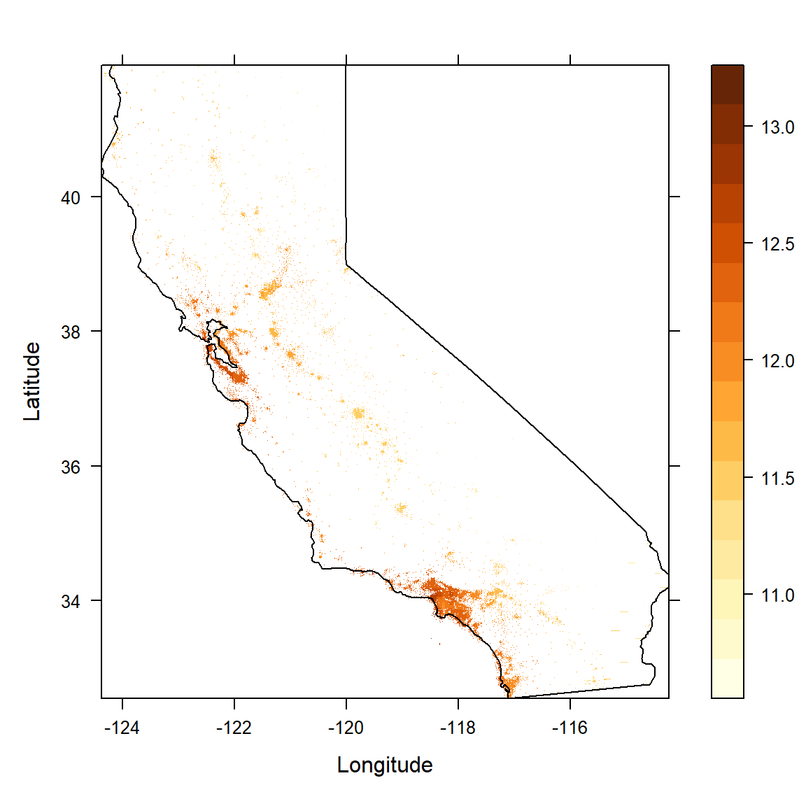
Comparing this with the original map of the data, we can see that the gbm model captured how location relates to house price.
So far we have only discussed the base version of stochastic gradient boosting, but there are several variants that use the same basic principle whilst making changes to some aspects of the algorithm. One particularly powerful, relatively recent development is Extreme Gradient Boosting (XGBoost).
XGBoost
Since Chen and Guestrin (2016) first proposed XGBoost, it has become a highly popular choice for solving a wide range of machine learning problems, especially structured/tabular data. Conceptually, it is a gradient boosting method built from regression trees, but with several important refinements that improve statistical regularisation and computational efficiency.
To illustrate its application, we will analyse the California data one final time using the xgboost package. In earlier versions, it was convenient to tune XGBoost via caret::train(method = "xgbTree"). However, at time of writing (2026-04-29), changes in the underlying R objects created by xgboost v3.2+ can cause caret fits/tuning to fail. Therefore, we have the following options:
Use
xgboost’s built-in CV grid search tuning function –xgb.cv()– which also applies early stopping. The only additional requirement is that the data be transformed into anxgb.DMatrixobject. The drawback here is that hyperparameter tuning and results plotting would have to be done “manually”, as opposed to usingcaret’s convenient built-in functions.Use a different model training framework instead of
caret, for example the now widely-used tidymodels framework, or the more powerful (but less convenient) mlr3 package. Although these are good options, we will not be introducing them at this stage.Install a previous version of
xgboost. This is not generally the recommended approach for long-term usage, however, for our purposes there is little functional difference between the older version used below and the latest version. Therefore, we will take this option.
Show/Hide Code
install.packages("xgboost", repos = "https://p3m.dev/cran/2025-12-01")package 'xgboost' successfully unpacked and MD5 sums checked
The downloaded binary packages are in
C:\Users\stevi\AppData\Local\Temp\RtmpMb13wK\downloaded_packagesShow/Hide Code
library(xgboost)The only hyperparameters we will search over are:
- Number of trees \(B\) from 5000 to 35000 in increments of 5000
- Tree depth \(d \in (3, 6, 9)\)
- Learning rate \(\lambda \in (0.005, 0.01, 0.05)\)
- Feature subsampling per tree (similar to \(m\) in the random forest, only at tree level) \(\in \{0.5, 1\}\)
- Row subsampling will be set to 0.7
Below we see all the hyperparameters that must be specified when creating a search grid for XGBoost. Note that separate models are not run for different numbers of trees; the chain is simply extended, allowing us to use even more granular numbers of trees than this should we want to.
Despite the relatively limited search, this will still take several hours to run, even on high performance hardware.
Show/Hide Code
getModelInfo()$xgbTree$parameters parameter class label
1 nrounds numeric # Boosting Iterations
2 max_depth numeric Max Tree Depth
3 eta numeric Shrinkage
4 gamma numeric Minimum Loss Reduction
5 colsample_bytree numeric Subsample Ratio of Columns
6 min_child_weight numeric Minimum Sum of Instance Weight
7 subsample numeric Subsample PercentageShow/Hide Code
# calif_xgb_grid <- expand.grid(nrounds = seq(5000, 35000, 5000), #number of trees
# max_depth = c(3, 6, 9), #interaction depth
# eta = c(0.005, 0.01, 0.05), #learning rate
# gamma = 0.001, #mindev
# colsample_bytree = c(0.5, 1), #proportion random features per tree
# min_child_weight = 1, #also controls tree depth
# subsample = 0.7 #proportion of observations used per tree
# )
#
# ctrl <- trainControl(method = 'cv', number = 5, verboseIter = T)
#
# set.seed(1)
# calif_xgb_gridsearch <- train(HousePrice ~ ., data = calif_fe_train,
# method = 'xgbTree',
# trControl = ctrl,
# verbose = F,
# tuneGrid = calif_xgb_grid)
# save(calif_xgb_gridsearch, file = 'data/xgb_calif_35k.Rdata')
load('data/xgb_calif_35k.Rdata')Looking at the hyperparameter tuning CV results in Figure 9, we once again see that the deeper tree (8 leaves) is preferable across all combinations. We would ideally want to find the best tree size, since this seems to make a notable difference, especially when applying random feature selection. For this number of trees, the learning rate change does not make a substantial difference.
Show/Hide Code
plot(calif_xgb_gridsearch)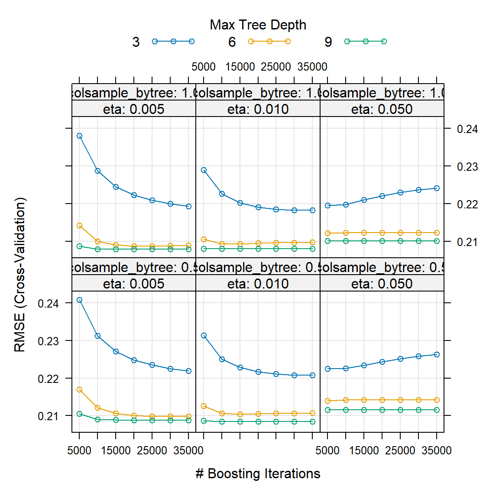
The best model combination (of the ones tested) is as follows:
Show/Hide Code
library(kableExtra)
kable(calif_xgb_gridsearch$bestTune)| nrounds | max_depth | eta | gamma | colsample_bytree | min_child_weight | subsample | |
|---|---|---|---|---|---|---|---|
| 38 | 15000 | 9 | 0.005 | 0.001 | 1 | 1 | 0.7 |
The best model used tree depth equal to the highest tested value (faster learning), coupled with the lowest learning rate (slower learning). Since both these values are at the edge of the search space, one should ideally perform another search with larger and smaller values, respectively. The benefit in this instance will be negligible though, hence we will select the best model from above to predict on the test set. Likewise for finding the exact number of trees where the CV error reaches a minimum – there is no noticeable difference in this example.
Show/Hide Code
options(warn = -1)
y_calif_fe <- calif_fe_test$HousePrice
calif_xgb_pred <- predict(calif_xgb_gridsearch, calif_fe_test)
calif_xgb_mse <- mean((y_calif_fe - calif_xgb_pred)^2)The CV RMSE of 0.208 was relatively close to the testing RMSE of 0.205 (MSE = 0.042), in fact slightly overestimating it. We can also determine the proportion of variation explained in the unseen data as \(R^2\) = 87.02%.
One way of visualising a model’s predictions is to simply plot them against the observed values. The closer the points lie to a straight line, the better the fit.
Show/Hide Code
plot_data <- as.data.frame(cbind(predicted = calif_xgb_pred, observed = calif_fe_test$HousePrice))
ggplot(plot_data, aes(predicted, observed)) + geom_point(color = 'darkred', alpha = 0.5) +
geom_smooth(method = lm) +
xlab('Predicted log(price)') + ylab('Observed log(price)') +
theme(plot.title = element_text(color = 'darkgreen', size = 16, hjust = 0.5),
axis.text.y = element_text(size = 12), axis.text.x = element_text(size = 12, hjust = 0.5),
axis.title.x = element_text(size = 14), axis.title.y = element_text(size = 14)) +
theme_bw()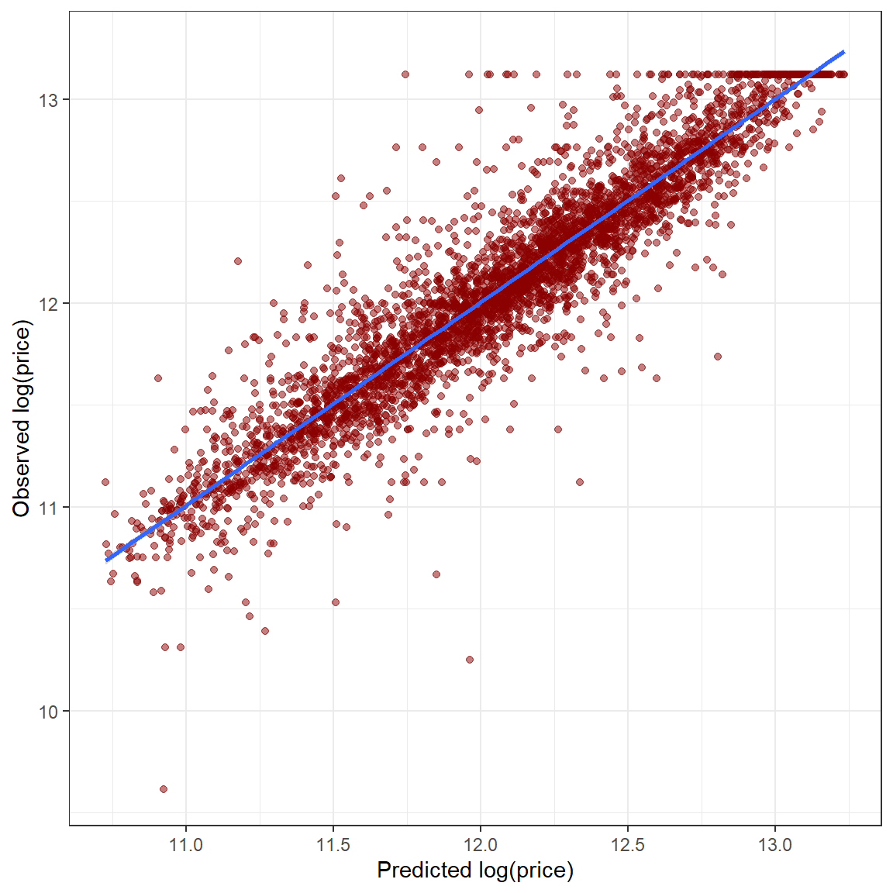
The first thing to notice is the clear ceiling on the observed house prices, which one should ideally have already picked up in the data exploration. This maximum value of 500001 is suspiciously round. It turns out that there are 992 neighbourhoods where the median house price was either $500,000 or $500,001. Whether this is an artefact of the data due to some measurement limit or estimation, or whether it was because of some real-world bound is something the analyst should determine before providing definitive conclusions.
For our very last example, we will return to the Titanic data.
Example – Titanic
Slow learning methods like gradient boosting generally tend to work better on larger datasets. Having said that, nothing prevents us from applying boosting to the Titanic data for comparison, even though it is relatively limited in size.
The benefit of a smaller problem is of course that the training goes quicker and it generally requires fewer trees, such that one can test more hyperparameter combinations for the same time cost. Subsampling is also unlikely to yield much, if any benefit, hence we will just use the gbm method.
We will search across trees from 500 to 6000 in increments of 500; \(d = 1, \ldots, 5\); and \(\lambda \in (0.001, 0.005, 0.01)\).
Show/Hide Code
titanic <- read.csv('data/titanic.csv', stringsAsFactors = T)
titanic$Pclass <- as.factor(titanic$Pclass) #Class coded as integer, should be factor
set.seed(1)
train <- sample(nrow(titanic), 0.7*nrow(titanic))
titanic_train <- titanic[train,]
titanic_test <- titanic[-train,]
# set.seed(4026)
# titanic_gbm_grid <- expand.grid(n.trees = seq(500, 6000, 500),
# interaction.depth = 1:5,
# shrinkage = c(0.01, 0.005, 0.001),
# n.minobsinnode = 1)
#
# ctrl <- trainControl(method = 'cv', number = 10, verboseIter = T)
#
# titanic_gbm_gridsearch <- train(Survived ~ ., data = titanic_train,
# method = 'gbm',
# distribution = 'bernoulli', #For classification
# trControl = ctrl,
# verbose = F,
# tuneGrid = titanic_gbm_grid)
# save(titanic_gbm_gridsearch, file = 'data/gbm_titanic.Rdata')
load('data/gbm_titanic.Rdata')The best model used the following hyperparameters:
Show/Hide Code
kable(titanic_gbm_gridsearch$bestTune)| n.trees | interaction.depth | shrinkage | n.minobsinnode | |
|---|---|---|---|---|
| 103 | 3500 | 4 | 0.005 | 1 |
This is a desirable result, since none of the hyperparameters are on the edge of the explored space. Using \(d = 4\) and \(\lambda = 0.005\), we can now find the exact number of trees where the CV deviance is minimised.
Show/Hide Code
# gbm requires 0-1 for binary classification (without caret)
titanic_train$Survived <- as.numeric(titanic_train$Survived) - 1
set.seed(5076)
titanic_gbm <- gbm(Survived ~ ., data = titanic_train,
distribution = 'bernoulli', #For binary classification (see ?gbm)
n.trees = 4000,
interaction.depth = 4,
shrinkage = 0.005,
bag.fraction = 1,
cv.folds = 10,
n.cores = 10,
verbose = F)
d <- gbm.perf(titanic_gbm)
legend('topright', c('CV error', 'Training error'), col = c('green', 'black'), lty = 1)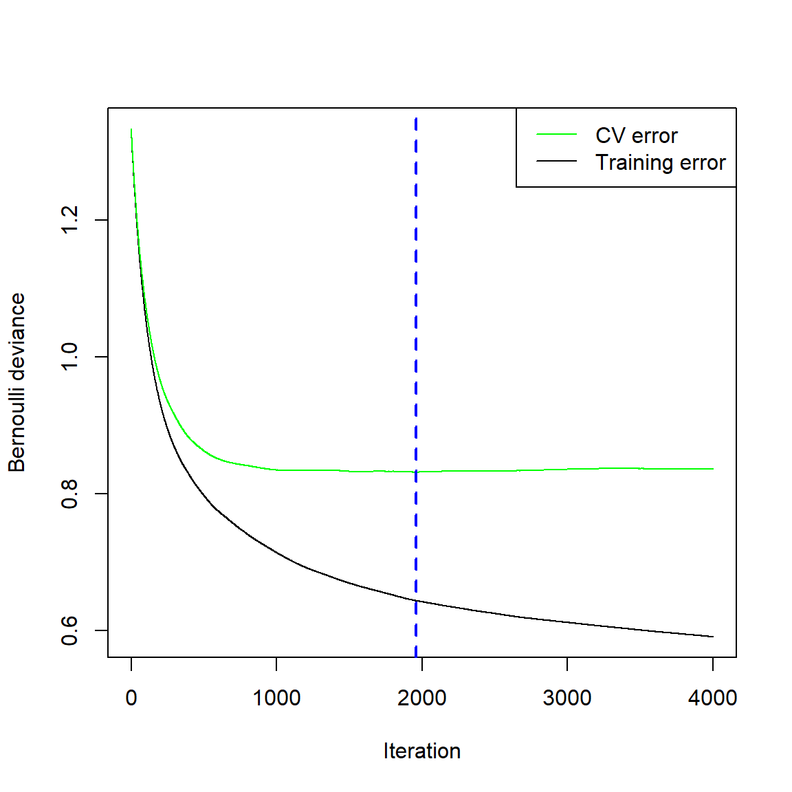
We will use this model, with only 1958 trees, for prediction.
Show/Hide Code
y_titanic_test <- as.numeric(titanic_test$Survived) - 1
titanic_gbm_pred <- predict(titanic_gbm, newdata = titanic_test, type = 'response')
titanic_gbm_mis <- mean(y_titanic_test != round(titanic_gbm_pred))Through gbm we have managed to reduce the testing misclassification rate even further, from 21.4% for the tuned random forest to 16.04%. Exploring the confusion matrix and other classification metrics is left as an exercise.
According to this model, passenger sex is still the most influential predictor. Age and passenger follow with similar levels of contribution. It’s worth noting that the impurity and permutation variable importance measures are quite similar, contrary to the random forest model variable importance from the previous lecture, where passenger class contributed relatively more to classification accuracy during prediction than it contributed during splitting.
Show/Hide Code
set.seed(1)
x_train <- select(titanic_train, -Survived)
y_train <- titanic_train$Survived |> as.factor()
tgbm_pred_wrapper <- function(object, newdata) {
p <- predict(object, newdata = newdata, n.trees = d, type = 'response') # d = chosen number of trees above
factor(as.integer(p >= 0.5), levels = levels(y_train))
}
#See vip::list_metrics() for a list of metrics
tgbm_per_imp <- vi_permute(
object = titanic_gbm,
feature_names = colnames(x_train),
train = x_train,
target = y_train,
metric = 'accuracy',
pred_wrapper = tgbm_pred_wrapper,
nsim = 10
)
tgbm_per_p <- vip(tgbm_per_imp) +
labs(
title = 'Permutation Variable Importance',
x = 'Increase in Prediction Error',
y = NULL
) +
theme_minimal()
tgbm_imp_p <- vip(titanic_gbm) +
labs(
title = 'Impurity Variable Importance',
x = 'Decrease in Splitting Criterion',
y = NULL
) +
theme_minimal()
tgbm_per_p + tgbm_imp_p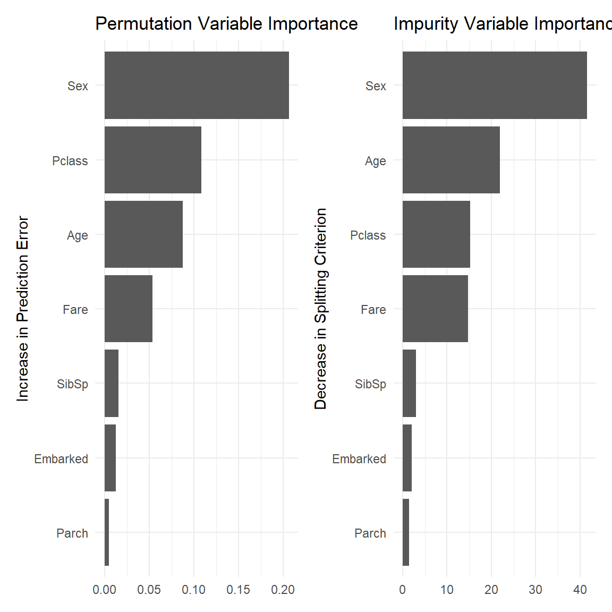
Moving on to the partial dependence plots, we observe the expected patterns based on the classification tree’s results. Figure 12 shows that log-odds of survival were significantly increased by being female; decreased as class increases; dipped sharply after late-teens, stayed relatively stable until about 60 years of age, and then decreased again; and increased sharply around a specific fare, although there are once again outliers in fare which can be removed (this is left for the reader).
Show/Hide Code
ylims = c(0,1)
p1 <- plot.gbm(titanic_gbm, 'Sex', d, ylab = '', type = 'response', ylim = ylims)
p2 <- plot.gbm(titanic_gbm, 'Pclass', d, ylab = '', type = 'response', ylim = ylims)
p3 <- plot.gbm(titanic_gbm, 'Age', d, ylab = '', type = 'response', ylim = ylims)
p4 <- plot.gbm(titanic_gbm, 'Fare', d, ylab = '', type = 'response', ylim = ylims)
grid.arrange(p1, p2, p3, p4, ncol = 2)
grid.text('Partial Predicted Probability', x = 0, vjust = 1, rot = 90)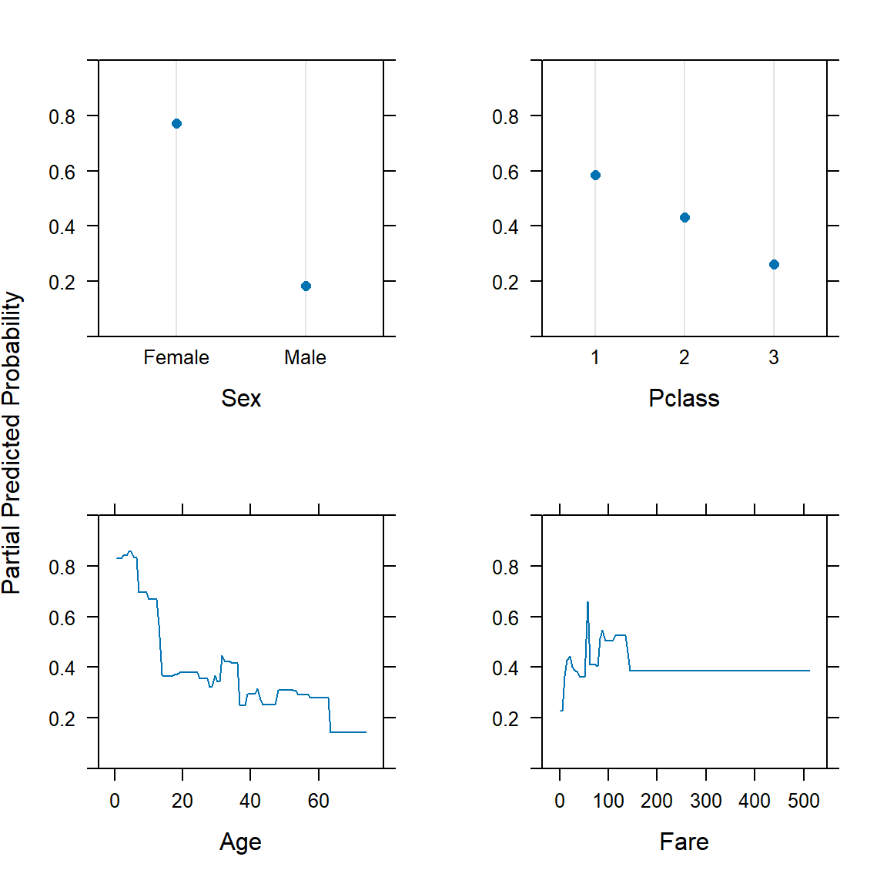
We might also be interested in the interaction between age and sex (Figure 13) or between two continuous features such as age and fare (Figure 14).
Show/Hide Code
#Bivariate PD plot
plot.gbm(titanic_gbm, c('Sex', 'Age'), d, ylab = '', type = 'response', ylim = ylims)
grid.text('Partial Predicted Probability', x = 0, vjust = 1, rot = 90)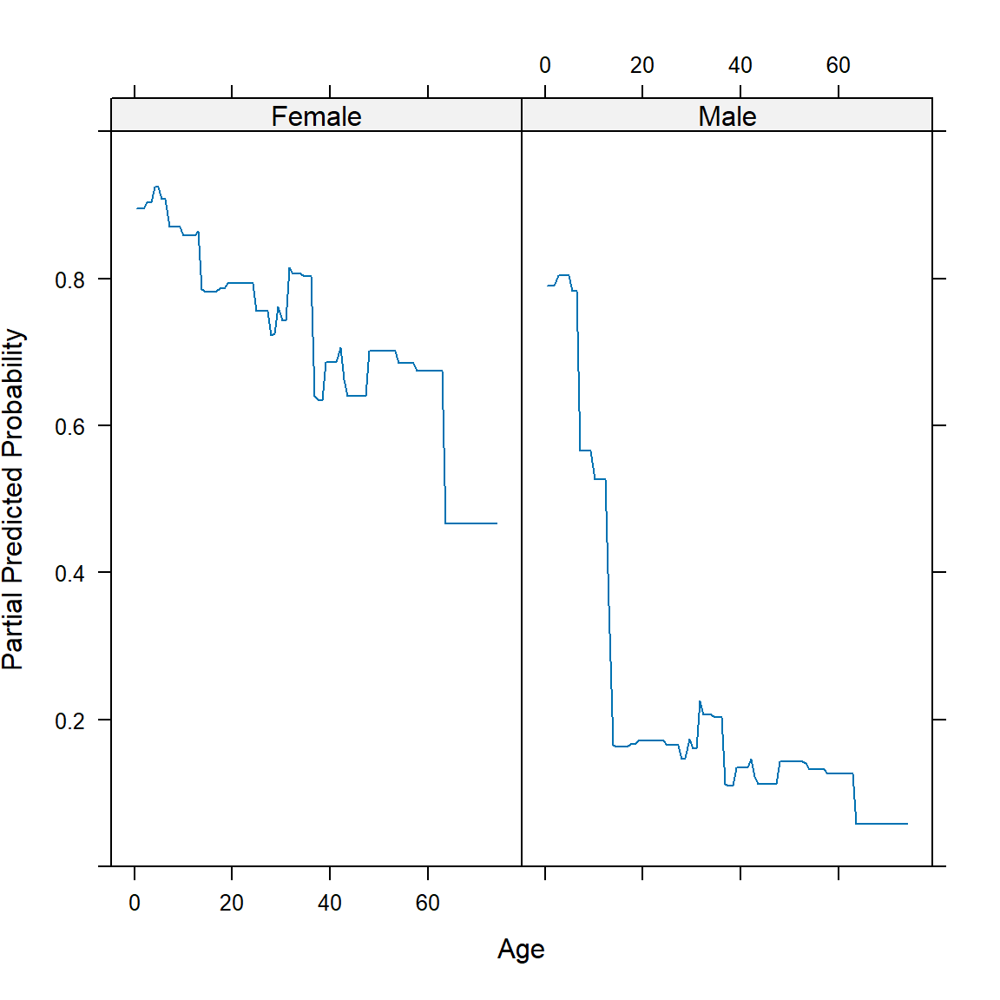
Although the overall pattern across ages is roughly the same for males and females, we do a see a noticeably more pronounced dip specifically for males beyond age of approximately 16.
Show/Hide Code
plot.gbm(titanic_gbm, c('Fare', 'Age'), d, type = 'response')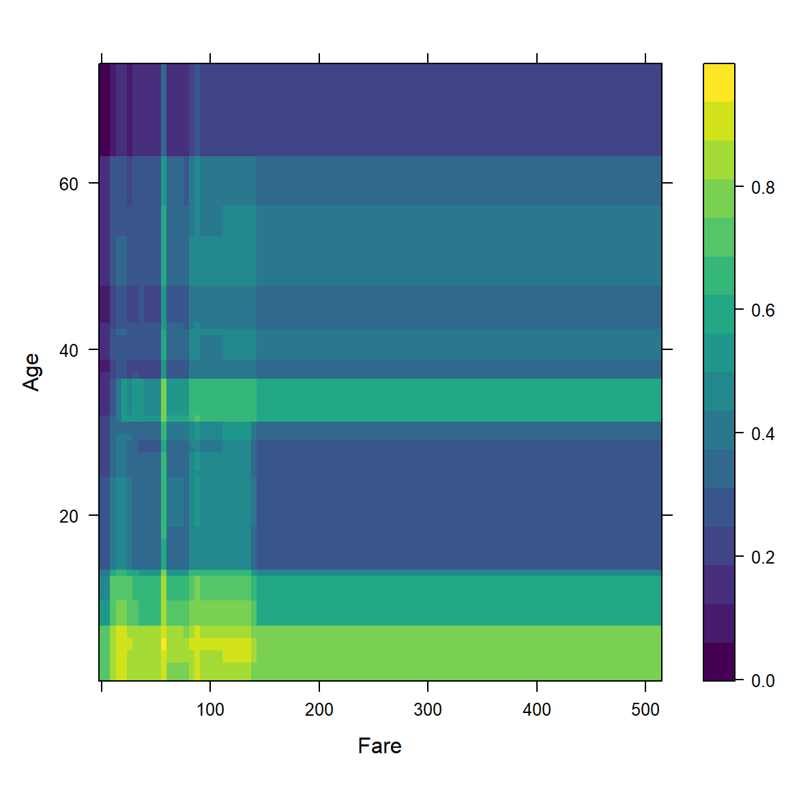
We observe little interaction between these two variables – the marginal patterns for both mostly persist across all levels of the other.
Final word
We end this section with one final reminder that the implementation of these supervised learning algorithms is constantly being developed, and although we mostly used caret for hyperparameter tuning, one could achieve the same with other libraries, e.g. tidymodels or mlr3.
You are indeed encouraged to keep on exploring new methods in R, although one should always ensure that you have a deeply grounded understanding of the theory underpinning these methods. So continue balancing depth of theory, breadth of topic, and practical application on your future journey through supervised learning.
Happy continued learning!